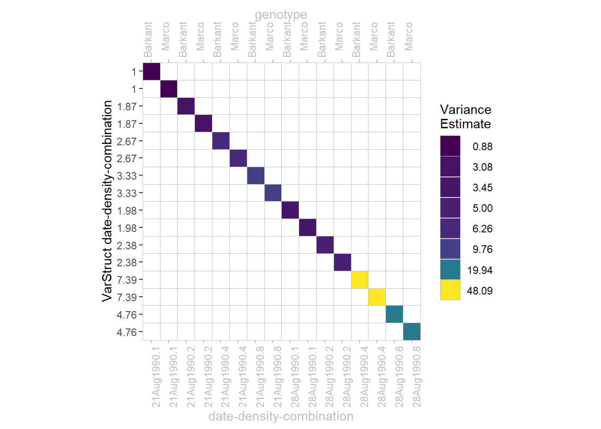

Variance Structures
Here you will find a list of variance structures (a.k.a covariance structures, variance-covariance-structures, correlation structures) with short explanations and possibly examples.
IID - Independent & Identically Distributed
This covariance structure has homogeneous variances and zero correlation between elements.
Number of parameters = 1 (i.e. \(\sigma\))
\[ \left(\begin{array}{cc} \sigma^2 & 0 & 0 & 0\\ & \sigma^2 & 0 & 0\\ & & \sigma^2 & 0\\ & & & \sigma^2\\ \end{array}\right) = \left(\begin{array}{cc} 1 & 0 & 0 & 0\\ & 1 & 0 & 0\\ & & 1 & 0\\ & & & 1\\ \end{array}\right) \sigma^2 \]
This is the simplest covariance structure and the default setting in most, if not all, linear modelling packages.
Diagonal
This covariance structure has heterogenous variances and zero correlation between elements.
Number of parameters: \(t\) (i.e. \(\sigma_1\), \(\sigma_2\), …, \(\sigma_t\)), which is the overall dimension of the covariance matrix (e.g. number of treatement levels).
\[ \left(\begin{array}{cc} \sigma_1^2 & 0 & 0 & 0\\ & \sigma_2^2 & 0 & 0\\ & & \sigma_3^2 & 0\\ & & & \sigma_4^2\\ \end{array}\right) = \left(\begin{array}{cc} 1 & 0 & 0 & 0\\ & k_1 & 0 & 0\\ & & k_2 & 0\\ & & & k_3\\ \end{array}\right) \sigma^2 \]
In our chapter on heterogeneous error variances, we fit models in which we allow for different error variances for two of the treatments. Thus, the off-diagonals are all 0, but there are multiple variances on the diagonal. More specifically, in mod5 we allows for 8 different error variances - one for each factor-level-combination of the respective factor effects date and density. This is visualized in the plot below as 8 different colors. Speaking in the syntax of nlme, we obtain 8 parameter estimates: 1 estimate for the model-object’s sigma (= standard deviation for error term) and 7 estimates (that are different from 1) in the model-object’s varStruct as can be seen on the y-axis:

In order to give a clearer picture, the variance matrix presented here was reduced to data of a single block in order to have dimensions 16x16. Since there were 4 complete blocks in the dataset, the entire variance matrix of the error term has dimensions 64x64. However, given that data/errors are sorted accordingly, our presented matrix is simply 1 out of 4 blocks in a block diagonal matrix.
First order autoregressive AR(1)
This covariance structure has homogeneous variances, while the correlation between any two elements gets smaller the further apart they are separated (e.g. in terms of time or space).
Number of parameters: 2 (i.e. \(\sigma\) and \(\rho\)).
\[ \left(\begin{array}{cc} \sigma^2 & \sigma^2\rho & \sigma^2\rho^2 & \sigma^2\rho^3\\ & \sigma^2 & \sigma^2\rho & \sigma^2\rho^2\\ & & \sigma^2 & \sigma^2\rho\\ & & & \sigma^2\\ \end{array}\right) = \left(\begin{array}{cc} 1 & \rho & \rho^2 & \rho^3\\ & 1 & \rho & \rho^2\\ & & 1 & \rho\\ & & & 1\\ \end{array}\right) \sigma^2 \]
As can be seen, the correlation between any two elements can be described more speficically as: it is equal to \(\rho\) for adjacent elements, \(\rho^2\) for elements that are separated by a third, and so on. Note that since it is a correlation, we have -1 < \(\rho\) < 1 and therefore \(\rho\) indeed gets smaller when squared etc. This correlation model is useful, if all time points are equally spaced.
As an explicit example, take the correlation between errors of two adjacent time points, in this case weeks, to be \(\rho=0.9\). The correlation between errors that are two weeks apart is then \(\rho^2=0.9^2=0.81\) and when they are three weeks apart it is \(\rho^3=0.9^3=0.729\) and so on. Thus, the advantage here is that correlations become smaller over time and thus we have different correlation estimates, yet only a single correlation parameter \(\rho\) is fitted in the model.
Multiplicative
It is possible to combine any two or more variance structures via direct multiplication a.k.a. the Kronecker product.
\[ \left(\begin{array}{cc} 1 & 0 \\ & k_1 \\ \end{array}\right) \otimes \left(\begin{array}{cc} 1 & 0 & 0 \\ & k_2 & 0 \\ & & k_3 \\ \end{array}\right) \sigma^2 = \left(\begin{array}{cc} 1\cdot1 & 0 & 0 & 0 & 0 & 0 \\ & 1\cdot k_2 & 0 & 0 & 0 & 0 \\ & & 1\cdot k_3 & 0 & 0 & 0 \\ & & & k_1\cdot 1 & 0 & 0 \\ & & & & k_1\cdot k_2 & 0 \\ & & & & & k_1\cdot k_3 \\ \end{array}\right) \sigma^2 \]
This operation on two matrices of arbitrary size resulting in a block matrix is sometimes denoted by \(\otimes\). To give an example, we refer to mod4 in the chapter on heterogeneous error variances. Here, a multiplicative variance structure results from the kronecker product of two diagonal variance structures. The first diagonal variance structure allows for different variances for the 2 levels of date, while the second diagonal variance structure allows for different variances for the 4 levels of density. Their Kronecker product therefore results in 8 different variances, visualized in the plot below as 8 different colors.
Advantage
One may now ask where the difference lies between this multiplicative variance structure for mod4 on the one hand, and the simple diagonal variance structure for all 8 date-density-combinations in mod5 (see diagonal section above) on the other hand. The question comes intuitively, since both lead to obtaining 8 different variance estimates for the error term. However, while the combinations for which the 8 estimates are obtained are the same, the estimates themselves are different between mod4 and mod5. In order to understand this, one must realize that fewer parameters need to be estimated here for mod4 (= 6 parameters) compared to the simple diagonal variance structure for mod5 (= 8 parameters) - even though both result in 8 different variance estimates! One can retrace this manually by counting the number of varStruct values on the y-axes of the two plots. There should be 5 values for mod4 and 7 values for mod5 that are not equal to 1 and in addition, sigma (= standard deviation for error term) itself is the missing parameter here.
Therefore, direct multiplication can lead to the desired structure with fewer parameters needing to be estimated. Notice that the number of parameters penalizes the AIC and therefore has a direct impact on model selection decisions. In the underlying chapter on heterogeneous error variances, mod4 (= multiplicative) is indeed chosen over mod5 based on the AIC.
Summary
| Variance Structure | total | var | cor | nlme | lme4 | glmmTMB | sommer | SAS |
|---|---|---|---|---|---|---|---|---|
| Identitiy | 1 | 1 | 0 | default | default | default | default | VC |
| Diagonal | t | t | 0 | varIdent | – | diag | ds | UN(1) |
| First order autoregressive | 2 | 1 | 1 | corAR1 | – | ar1 | AR1 | AR(1) |
| Note: | ||||||||
| t = overall dimension of the covariance matrix (e.g. number of treatement levels). |
Please feel free to contact us about any of this!
schmidtpaul1989@outlook.com